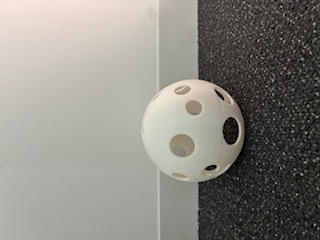
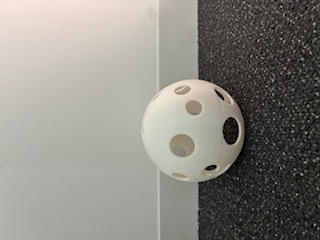
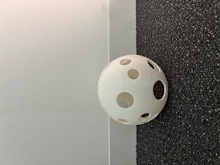

作品写真
 

Lighting Design Work

自分の部屋は機能的ではあるものの、どこか無機質で、もう少し雰囲気を変えたいと感じていました。 そこで、部屋の印象を大きく左右する「光」に注目し、ランプシェードを自作してみようと考えました。 既製品ではなく、自分で形や穴の配置を考えることで、より愛着のある空間を作りたいと思ったのが制作のきっかけです。
球体に複数の穴をあけることで、壁や天井に光の模様が広がるよう工夫しました。 穴の大きさや配置を均一にしすぎず、あえて少しランダムにすることで、 点灯したときに柔らかく、動きのある光になるよう意識しています。 また、白色を基調とすることで、光そのものの美しさが際立つようにしました。
実際に使ってみると、光の広がり方が想定よりも偏ってしまう部分がありました。 穴の配置をもう少しシミュレーションしてから制作すれば、 さらに均整の取れた影を作れたと思います。